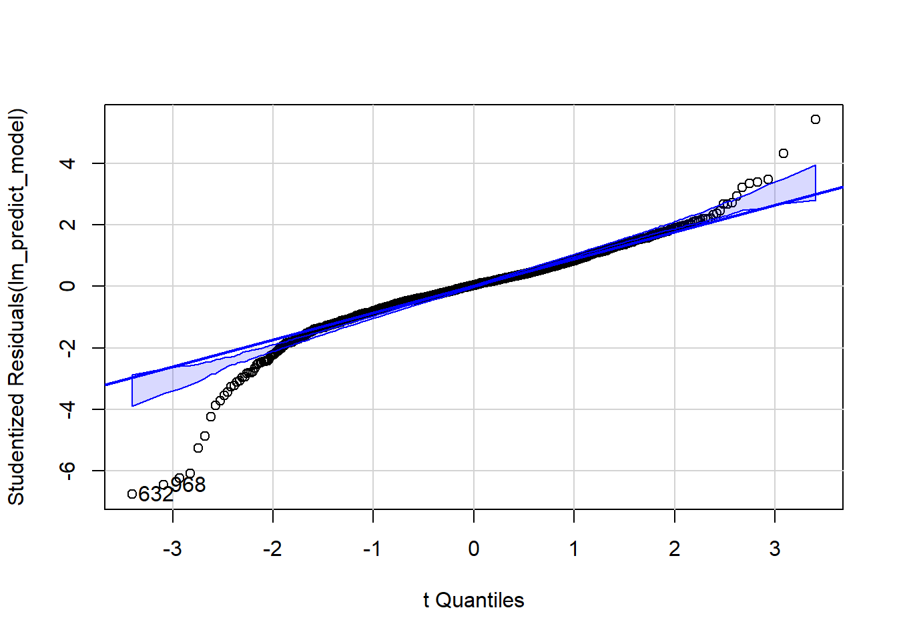
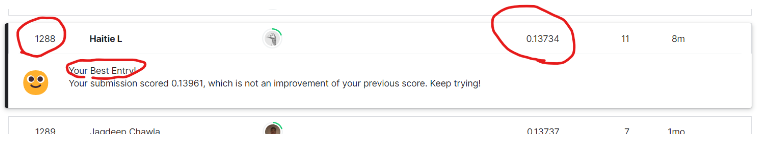

HousePrice Prediction
2023-07-30
- Load necessary packages, load data.
- Fill missing values in numeric columns with KNN imputation
- combine training and test data together, for easier cleaning
- Define ordinal columns, regroup character columns and apply factor encoding.
- Checking Colinearity of the model
- Checking for redundency/ deleting noise in the data
- Checking assumption for regression (full model)
- Logging SalePrice to see if it fix the clusterred residuals
- Perform a forward/backward/stepwise selection in SAS
- Build custom regression model in SAS
- Predition
- Examen relationship in Sales price in neighborhood ‘NAmes’, ‘Edwards’, ‘BrkSide’
- Adding Indicator Variable
- Adding interaction variables
- Model with Interaction Summaries
Load necessary packages, load data.
#load necessary packages:
library(car)
library(tidyverse)
library(caret)
library(multiUS)
library(boot)
library(ggplot2)
library(ggpubr)
library(readr)
library(corrplot)
library(olsrr)
library(MASS)
library(car)
#Load Data
data=read.csv('https://raw.githubusercontent.com/anishkapeter/Stat1Project/main/train.csv')Fill missing values in numeric columns with KNN imputation
numeric_cols <- names(data)[sapply(data, is.numeric)]
#colSums(is.na(data[,numeric_cols]))
#mode(data$LotFrontage)
categorical_cols <- names(data)[sapply(data, is.character)]
#length(categorical_cols)+length(numeric_cols)
numeric_data <- data[, numeric_cols]
numeric_data_imputed <- KNNimp(as.matrix(numeric_data)) # convert data frame to matrix for knnImpute
data[numeric_cols] <- numeric_data_imputedcombine training and test data together, for easier cleaning
url <- "https://github.com/anishkapeter/Stat1Project/blob/main/test.csv?raw=true"
test <- read.csv(url)
data_c <- subset(data, select = -c(SalePrice))
saleprice = data$SalePrice
# Combine the data and test dataframes
combined_data <- rbind(data_c, test)Define ordinal columns, regroup character columns and apply factor encoding.
# Identify character columns
combined_data$ExterCond <- factor(combined_data$ExterCond, levels = c("Po", "Fa", "TA", "Gd", "Ex"))
combined_data$ExterCond <- as.numeric(combined_data$ExterCond)
combined_data$ExterQual <- factor(combined_data$ExterQual, levels = c("Fa", "TA", "Gd", "Ex"))
combined_data$ExterQual <- as.numeric(combined_data$ExterQual)
# First, ensure NA values are not treated as missing data
combined_data$BsmtQual <- addNA(combined_data$BsmtQual)
combined_data$BsmtCond <- addNA(combined_data$BsmtCond)
combined_data$BsmtQual <- factor(combined_data$BsmtQual, levels = c("Po", "Fa", "TA", "Gd", "Ex"))
combined_data$BsmtCond <- factor(combined_data$BsmtCond, levels = c("Po", "Fa", "TA", "Gd", "Ex"))
combined_data$BsmtQual <- as.numeric(combined_data$BsmtQual)
combined_data$BsmtCond <- as.numeric(combined_data$BsmtCond)
# First, ensure NA values are not treated as missing data
combined_data$GarageCond <- addNA(combined_data$GarageCond)
combined_data$GarageQual <- addNA(combined_data$GarageQual)
combined_data$GarageCond <- factor(combined_data$GarageCond, levels = c("Po", "Fa", "TA", "Gd", "Ex"))
combined_data$GarageQual <- factor(combined_data$GarageQual, levels = c("Po", "Fa", "TA", "Gd", "Ex"))
combined_data$GarageCond <- as.numeric(combined_data$GarageCond)
combined_data$GarageQual <- as.numeric(combined_data$GarageQual)
# Convert NA values to factor levels
combined_data$PoolQC <- addNA(combined_data$PoolQC)
combined_data$FireplaceQu <- addNA(combined_data$FireplaceQu)
combined_data$HeatingQC <- addNA(combined_data$HeatingQC)
combined_data$KitchenQual <- addNA(combined_data$KitchenQual)
combined_data$BsmtExposure <- addNA(combined_data$BsmtExposure)
combined_data$PoolQC <- factor(combined_data$PoolQC, levels = c("Po", "Fa", "TA", "Gd", "Ex"))
combined_data$FireplaceQu <- factor(combined_data$FireplaceQu, levels = c("Po", "Fa", "TA", "Gd", "Ex"))
combined_data$HeatingQC <- factor(combined_data$HeatingQC, levels = c("Po", "Fa", "TA", "Gd", "Ex"))
combined_data$KitchenQual <- factor(combined_data$KitchenQual, levels = c("Po", "Fa", "TA", "Gd", "Ex"))
combined_data$BsmtExposure <- factor(combined_data$BsmtExposure, levels = c("No", "Mn", "Av", "Gd"))
combined_data$PoolQC <- as.numeric(combined_data$PoolQC)
combined_data$FireplaceQu <- as.numeric(combined_data$FireplaceQu)
combined_data$HeatingQC <- as.numeric(combined_data$HeatingQC)
combined_data$KitchenQual <- as.numeric(combined_data$KitchenQual)
combined_data$BsmtExposure <- as.numeric(combined_data$BsmtExposure)
# Convert NA values to factor levels
combined_data$BsmtFinType1 <- addNA(combined_data$BsmtFinType1)
combined_data$BsmtFinType2 <- addNA(combined_data$BsmtFinType2)
combined_data$Fence <- addNA(combined_data$Fence)
combined_data$GarageFinish <- addNA(combined_data$GarageFinish)
combined_data$Alley <- addNA(combined_data$Alley)
#table(combined_data$Alley)
combined_data$BsmtFinType1 <- factor(combined_data$BsmtFinType1, levels = c("Unf", "LwQ", "Rec", "BLQ", "ALQ", "GLQ"))
combined_data$BsmtFinType2 <- factor(combined_data$BsmtFinType2, levels = c("Unf", "LwQ", "Rec", "BLQ", "ALQ", "GLQ"))
combined_data$CentralAir <- factor(combined_data$CentralAir, levels = c("N", "Y"))
combined_data$Fence <- factor(combined_data$Fence, levels = c("MnWw", "GdWo", "MnPrv", "GdPrv"))
combined_data$GarageFinish <- factor(combined_data$GarageFinish, levels = c("Unf", "RFn", "Fin"))
combined_data$Alley <- factor(combined_data$Alley, levels = c("Grvl", "Pave"))
combined_data$LotShape <- factor(combined_data$LotShape, levels = c("Reg", "IR1", "IR2", "IR3"))
combined_data$LandSlope <- factor(combined_data$LandSlope, levels = c("Gtl", "Mod", "Sev"))
combined_data$BsmtFinType1 <- as.numeric(combined_data$BsmtFinType1)
combined_data$BsmtFinType2 <- as.numeric(combined_data$BsmtFinType2)
combined_data$CentralAir <- as.numeric(combined_data$CentralAir)
combined_data$Fence <- as.numeric(combined_data$Fence)
combined_data$GarageFinish <- as.numeric(combined_data$GarageFinish)
combined_data$Alley <- as.numeric(combined_data$Alley)
combined_data$LotShape <- as.numeric(combined_data$LotShape)
combined_data$LandSlope <- as.numeric(combined_data$LandSlope)
ordinal_cols <- c('ExterQual', 'ExterCond', 'BsmtQual', 'BsmtCond',
'GarageCond', 'GarageQual', 'PoolQC', 'FireplaceQu',
'HeatingQC', 'KitchenQual', 'BsmtExposure', 'BsmtFinType1',
'BsmtFinType2', 'CentralAir', 'Fence','GarageFinish','Alley','LotShape','LandSlope')
#table(data$ExterQual)
combined_data[ordinal_cols] <- lapply(combined_data[ordinal_cols], function(x) replace(x, is.na(x), 0))
# Transform ordinal columns into factors and replace NA with 0
#data[ordinal_cols] <- lapply(data[ordinal_cols], function(x) {
# x <- as.factor(x)
# levels(x) <- c(levels(x), "0")
# x[is.na(x)] <- "0"
# return(x)
# })
# Checking all character columns
#colnames(data)[colSums(is.na(data)) > 0]
# Threshold for 'rare' observations
n <- 10
# Loop through the character columns
for (col_name in colnames(combined_data)[sapply(combined_data, is.character)]) {
# Convert rare observations to 'Other'
combined_data[[col_name]] <- ifelse(combined_data[[col_name]] %in% names(which(table(combined_data[[col_name]]) < n)), "Other", combined_data[[col_name]])
# Convert column to factor
combined_data[[col_name]] <- as.factor(combined_data[[col_name]])
# Add NA as a level if there are any NAs in the column
if(any(is.na(combined_data[[col_name]]))) {
combined_data[[col_name]] <- addNA(combined_data[[col_name]])
}
}
#Deleting some columns
#rare_level_factors <- sapply(data2, function(x) is.factor(x) && any(table(x) <= 2))
#print(names(data2)[rare_level_factors])
#data$Electrical=as.character(data$Electrical)
#data$Electrical[is.na(data$Electrical)] <- "Other"
#data$Electrical=as.factor(data$Electrical)
#class(combined_data$Electrical)
#data <- data[,-which(names(data) == "Utilities")]
# No more missing values, ordinary variable has been factorized
sum(is.na(combined_data))## [1] 330#table(data$MiscFeature)
#table(data$Street)
#table(data$Utilities)
#table(data$Condition2)
#table(data$MiscFeature)
#table(data$Electrical)Checking Colinearity of the model
#Deleting "TotalBsmtSF or X1stFlrSF" , "GarageCars or GarageArea" , "YearBuilt or GarageYearBuilt" , "Fireplaces" or "FireplacesQu" , "GarageCond" or GarageQu", "PoolQC or PoolArea"
df_numeric <- combined_data[sapply(combined_data, is.numeric)]
# Compute the correlation matrix
cor_matrix <- cor(df_numeric, use = "pairwise.complete.obs")
# Create a correlation plot
corrplot(cor_matrix, type = "upper", order = "hclust",
tl.col = "black", tl.srt = 45, tl.cex = 0.5)
# Find pairs with high correlation
high_corr_indices <- findCorrelation(cor_matrix, cutoff = 0.7)
# Get column names from indices
high_corr_names <- colnames(df_numeric)[high_corr_indices]
# Print the column names
print(high_corr_names)## [1] "OverallQual" "GarageCars" "TotalBsmtSF" "YearBuilt" "GrLivArea"
## [6] "ExterQual" "FireplaceQu" "BsmtFinSF1" "GarageQual" "BsmtFinSF2"
## [11] "PoolArea"Deleting “TotalBsmtSF or X1stFlrSF” , “GarageCars or GarageArea” , “YearBuilt or GarageYearBuilt” , “Fireplaces” or “FireplacesQu” , “GarageCond” or GarageQual” “PoolQC or PoolArea”, “BsmtFinSF1 or BsmtFinType1”， “BsmtFinSF2 or BsmtFinType2”
Checking for redundency/ deleting noise in the data
Rare Observation provide very little information about the dependent variable and may cause noise in the data set.
table(combined_data$Street)##
## Grvl Pave
## 12 2907table(combined_data$Utilities)##
## AllPub Other <NA>
## 2916 1 2table(combined_data$Condition2)##
## Feedr Norm Other
## 13 2889 17table(combined_data$MiscFeature)##
## Other Shed <NA>
## 10 95 2814combined_data <- combined_data[, -which(names(combined_data) %in% c('X1stFlrSF', 'GarageCars', 'GarageYrBlt','FireplaceQu','GarageCond','PoolQC','BsmtFinType1','BsmtFinType2' ,'Street', 'Utilities', 'Condition2', 'MiscFeature', 'Alley','Fence'))]
#write.csv(data2,file = 'data2')
#formula(model2)
#colnames(data2[sapply(data2,is.numeric)])
table(combined_data$Foundation)##
## BrkTil CBlock Other PConc Slab Stone
## 311 1235 5 1308 49 11Checking assumption for regression (full model)
data=combined_data[1:1460,]
data$SalePrice=saleprice
test = combined_data[1461:nrow(combined_data), ]
model = lm(SalePrice ~., data = data)
# residual plots / Histogram / Q-Q plot / Calculate Cook's distances /Create Residuals vs Leverage plot
histogram(model$residuals)
plot(model)


#Look for influential observations
#Looking at observation 1299,524, delete them in the data
data= data[-c(1299,524),]
rownames(data) <- NULL
#write.csv(data,file = "train123")
#colnames(data[sapply(combined_data, is.factor)])Logging SalePrice to see if it fix the clusterred residuals
data2=data
data2$SalePrice = log(data$SalePrice)
model2 = lm(SalePrice~., data = data2)
#summary(model2)
residualPlot(model2)#write.csv(data2,file="logdata.csv",row.names = FALSE)
# Compare to model1(unlogged) , the residual plots forms a rather perfect random cloud formation which is ideal
# Histogram
res2= model2$residuals
histogram(res2)
plot(model2)


Perform a forward/backward/stepwise selection in SAS
Dianostics
Build custom regression model in SAS
model_formula= lm(SalePrice ~ MSZoning:GrLivArea+ LotArea:BsmtFinSF1+KitchenAbvGr:GarageQual +GrLivArea:LotArea+ LotArea + OverallQual + OverallCond + YearBuilt + BsmtExposure + BsmtFinSF1 +BsmtFinSF2 +HeatingQC+BsmtUnfSF + GrLivArea + HalfBath + KitchenAbvGr + KitchenQual + GarageArea + GarageQual + WoodDeckSF +
ScreenPorch + MSZoning + Neighborhood + BldgType +
MasVnrType + Foundation + Functional + GarageType + SaleCondition+Fireplaces,
data = data2) Predition
table(data$MSZoning)##
## C (all) FV RH RL RM <NA>
## 10 65 16 1149 218 0table(test$MSZoning)##
## C (all) FV RH RL RM <NA>
## 15 74 10 1114 242 4levels(test$MSZoning)[is.na(levels(test$MSZoning))] <- "RL"
table(data$Exterior1st )##
## AsbShng BrkFace CemntBd HdBoard MetalSd Other Plywood Stucco VinylSd Wd Sdng
## 20 50 60 222 220 7 108 24 515 206
## WdShing <NA>
## 26 0table(test$Exterior1st )##
## AsbShng BrkFace CemntBd HdBoard MetalSd Other Plywood Stucco VinylSd Wd Sdng
## 24 37 65 220 230 6 113 18 510 205
## WdShing <NA>
## 30 1levels(test$Exterior1st)[is.na(levels(test$Exterior1st))] <- "VinylSd"
table(data$Functional )##
## Maj1 Min1 Min2 Mod Other Typ <NA>
## 14 31 34 15 6 1358 0table(test$Functional )##
## Maj1 Min1 Min2 Mod Other Typ <NA>
## 5 34 36 20 5 1357 2levels(test$Functional )[is.na(levels(test$Functional ))] <- "Typ"
table(data$SaleType )##
## COD ConLD CWD New Other WD <NA>
## 43 9 4 120 15 1267 0table(test$SaleType )##
## COD ConLD CWD New Other WD <NA>
## 44 17 8 117 14 1258 1levels(test$SaleType )[is.na(levels(test$SaleType ))] <- "WD"
#Forward
lm_predict_model= lm(SalePrice ~ MSSubClass + LotArea + OverallQual + OverallCond + YearBuilt + MasVnrArea + ExterQual +
BsmtQual + BsmtCond + BsmtExposure + BsmtFinSF1 + TotalBsmtSF + GrLivArea + HalfBath +
BedroomAbvGr + KitchenAbvGr + KitchenQual + GarageArea + GarageQual + WoodDeckSF +
ScreenPorch + MoSold + MSZoning + LotConfig + Neighborhood + Condition1 + BldgType +
Exterior1st + MasVnrType + Foundation + Functional + GarageType + PavedDrive + SaleCondition,
data = data2)
#summary(lm_predict_model)
prediciton=predict(lm_predict_model,newdata = test)
test$SalePrice=exp(prediciton)
Submission_F=test[,c("Id","SalePrice")]
mean_sale_price <- mean(Submission_F$SalePrice, na.rm = TRUE)
Submission_F$SalePrice[is.na(Submission_F$SalePrice)] <- mean_sale_price
sum(is.na(prediciton))## [1] 17write.csv(Submission_F, file = 'Submission_F.csv', row.names = FALSE)
plot(lm_predict_model$residuals)
qqPlot(lm_predict_model)
## [1] 632 968histogram(lm_predict_model$residuals)
plot(lm_predict_model)
#Backward
model_formula <- lm( SalePrice ~ MSSubClass + LotFrontage + LotArea + LandSlope + OverallQual + OverallCond + YearBuilt + MasVnrArea + ExterQual + ExterCond + BsmtQual + BsmtCond + BsmtExposure + BsmtFinSF1 + BsmtFinSF2 + BsmtUnfSF + HeatingQC + X2ndFlrSF + LowQualFinSF + GrLivArea + FullBath + HalfBath + BedroomAbvGr + KitchenAbvGr + KitchenQual + TotRmsAbvGrd + Fireplaces + GarageArea + GarageQual + WoodDeckSF + OpenPorchSF + X3SsnPorch + ScreenPorch + PoolArea + MoSold + MSZoning + LandContour + LotConfig + Neighborhood + Condition1 + BldgType + HouseStyle + RoofMatl + Exterior1st + MasVnrType + Foundation + Functional + GarageType + SaleType + SaleCondition
,data = data2)
#summary(model_formula)
prediciton=predict(model_formula,newdata = test)
test$SalePrice=exp(prediciton)
submission_Backward=test[,c("Id","SalePrice")]
mean_sale_price <- mean(submission_Backward$SalePrice, na.rm = TRUE)
submission_Backward$SalePrice[is.na(submission_Backward$SalePrice)] <- mean_sale_price
sum(is.na(prediciton))## [1] 240write.csv(submission_Backward, file = 'submission_Backward.csv', row.names = FALSE)
plot(model_formula$residuals)qqPlot(model_formula)
## [1] 463 632histogram(model_formula$residuals)plot(model_formula)

#stepwise
model_formula <- lm(SalePrice ~ MSSubClass + LotFrontage + LotArea + LandSlope + OverallQual + OverallCond + YearBuilt + MasVnrArea + ExterQual + ExterCond + BsmtQual + BsmtCond + BsmtExposure + BsmtFinSF1 + BsmtFinSF2 + TotalBsmtSF + GrLivArea + BedroomAbvGr + KitchenAbvGr + KitchenQual + GarageArea + GarageQual + WoodDeckSF + OpenPorchSF + MoSold + MSZoning + LotConfig + Neighborhood + Condition1 + BldgType + Exterior1st + MasVnrType + Functional + GarageType + PavedDrive + SaleCondition,data = data2)
#summary(model_formula)
prediciton=predict(model_formula,newdata = test)
test$SalePrice=exp(prediciton)
submission_stepwise=test[,c("Id","SalePrice")]
mean_sale_price <- mean(submission_stepwise$SalePrice, na.rm = TRUE)
submission_stepwise$SalePrice[is.na(submission_stepwise$SalePrice)] <- mean_sale_price
sum(is.na(prediciton))## [1] 240write.csv(submission_stepwise, file = 'submission_stepwise.csv', row.names = FALSE)
plot(model_formula$residuals)
qqPlot(model_formula)
## [1] 632 968histogram(model_formula$residuals)
plot(model_formula)
#Custom
model_formula= lm(SalePrice ~ MSZoning:GrLivArea+ LotArea:BsmtFinSF1+KitchenAbvGr:GarageQual +GrLivArea:LotArea+ LotArea + OverallQual + OverallCond + YearBuilt + BsmtExposure + BsmtFinSF1 +BsmtFinSF2 +HeatingQC+BsmtUnfSF + GrLivArea + HalfBath + KitchenAbvGr + KitchenQual + GarageArea + GarageQual + WoodDeckSF +
ScreenPorch + MSZoning + Neighborhood + BldgType +
MasVnrType + Foundation + Functional + GarageType + SaleCondition+Fireplaces,
data = data2)
#summary(model_formula)
prediciton=predict(model_formula,newdata = test)
test$SalePrice=exp(prediciton)
submission_Cust=test[,c("Id","SalePrice")]
mean_sale_price <- mean(submission_Cust$SalePrice, na.rm = TRUE)
submission_Cust$SalePrice[is.na(submission_Cust$SalePrice)] <- mean_sale_price
sum(is.na(prediciton))## [1] 2write.csv(submission_Cust, file = 'submission_Cust.csv', row.names = FALSE)
plot(model_formula)


plot(model_formula$residuals)histogram(model_formula$residuals)#trial2
model_formula= lm(SalePrice ~ (YearBuilt:ScreenPorch+LotArea:TotalBsmtSF+KitchenAbvGr:GarageQual +GrLivArea:LotArea+ LotArea + OverallQual + OverallCond + YearBuilt + BsmtExposure + BsmtFinSF1 +BsmtFinSF2 +HeatingQC+BsmtUnfSF + GrLivArea + HalfBath + KitchenAbvGr + KitchenQual + GarageArea + GarageQual + WoodDeckSF +
ScreenPorch + MSZoning + Neighborhood + BldgType +
MasVnrType + Foundation + Functional + GarageType + SaleCondition+Fireplaces)^2,
data = data2)
#summary(model_formula)
prediciton=predict(model_formula,newdata = test) ## Warning in predict.lm(model_formula, newdata = test): prediction from a
## rank-deficient fit may be misleadingtest$SalePrice=exp(prediciton)
submission_Cust=test[,c("Id","SalePrice")]
mean_sale_price <- mean(submission_Cust$SalePrice, na.rm = TRUE)
submission_Cust$SalePrice[is.na(submission_Cust$SalePrice)] <- mean_sale_price
sum(is.na(prediciton))## [1] 2write.csv(submission_Cust, file = 'submission_Cust.csv', row.names = FALSE)Examen relationship in Sales price in neighborhood ‘NAmes’, ‘Edwards’, ‘BrkSide’
options(scipen = 999)
library(dplyr)
library(ggplot2)
data= read.csv("https://raw.githubusercontent.com/anishkapeter/Stat1Project/main/train.csv")
# Model without Interaction Variable
filtered_neighborhood = data %>% filter (Neighborhood %in% c('NAmes', 'Edwards', 'BrkSide'))
filtered_neighborhood_model= lm(SalePrice ~ GrLivArea, data = filtered_neighborhood)
#summary(filtered_neighborhood_model)
# Check Assumptions Model Without Indicator and Interaction Variable
plot(filtered_neighborhood_model)


histogram(filtered_neighborhood_model$residuals)ggplot(filtered_neighborhood,aes(x =GrLivArea , y =SalePrice )) +
geom_point() +
ggtitle("ScatterPlot of SalePrice vs GrLivArea") # Residual plot clustered, using log-log method to transform the dataset
# Log log Transform to data
data3=data
data3$SalePrice = log(data$SalePrice)
data3$GrLivArea = log(data$GrLivArea)
# filter the logged data to only include the 3 neighborhoods of interest
filtered_data2 <- data3 %>% filter(Neighborhood %in% c('NAmes', 'Edwards', 'BrkSide'))
# build model on log data without interaction and indicator var
filtered_data2_model = lm(SalePrice ~ GrLivArea, data = filtered_data2)
#summary(filtered_data2_model)
# Checking Assumptions
ggplot(filtered_data2,aes(x =GrLivArea , y =SalePrice )) +
geom_point()+ggtitle("ScatterPlot of Log(SalePrice) vs Log(GrLivArea)") +
xlab("Log(GrLivArea)") +
ylab("Log(SalePrice)")
hist(filtered_data2_model$residuals)plot(filtered_data2_model)

# Confidence Interval for Log Model without Interaction or Indicator
confint(filtered_data2_model)## 2.5 % 97.5 %
## (Intercept) 7.2744027 8.2323536
## GrLivArea 0.5010272 0.6354552plot(filtered_data2$GrLivArea, filtered_data2$SalePrice,
main="Scatterplot with Regression Line",
xlab="Above grade (ground) living area square feet (GrLivArea)",
ylab="Sale Price (SalePrice)", pch=19, frame=FALSE, col="blue")+
abline(filtered_data2_model, col="red")
## integer(0)Therefore the regression model predicting SalePrice using GrlivArea is
SalePrice = 7.58437 + 0.59230 * GrlivArea
Adding Indicator Variable
# Adding Indicator Variable
filtered_data2_model3 <- lm(SalePrice ~ GrLivArea + Neighborhood, data = filtered_data2)
#summary(filtered_data2_model3)Adding interaction variables
# Fit the model
filtered_data2_model2 <- lm(SalePrice ~ GrLivArea + GrLivArea * Neighborhood, data = filtered_data2)
# Summary of the model
#summary(filtered_data2_model2)
# Confidence intervals
confint(filtered_data2_model2)## 2.5 % 97.5 %
## (Intercept) 4.9207572 6.9050843
## GrLivArea 0.6788064 0.9604897
## NeighborhoodEdwards 0.8235795 3.3635933
## NeighborhoodNAmes 1.4002744 3.7593394
## GrLivArea:NeighborhoodEdwards -0.4793353 -0.1206263
## GrLivArea:NeighborhoodNAmes -0.5134042 -0.1798447# Residuals histogram
histogram <- ggplot(filtered_data2_model2, aes(x=residuals)) +
geom_histogram(binwidth=1, color="black", fill="white") +
theme_minimal() +
labs(x="Residuals", y="Frequency", title="Histogram of Residuals")
# Model diagnostics
plot_diag <- plot(filtered_data2_model2, diagnostic = TRUE)


# Model Coefficients
model_coef <- coef(filtered_data2_model2)Anova Analysis
#ANOVA for model with Neighborhood as Interaction Variable
anova(filtered_data2_model3)#ANOVA for model with Neighborhood as Indicator Variable
anova(filtered_data2_model2)#ANOVA for model without Neighborhood
anova(filtered_data2_model)1 - pf(68.02972973,2,377)## [1] 01 - pf(8.641891892,2,377)## [1] 0.0002139754Model with Interaction Summaries
For our best performing model we had #1288 on Kaggle, Yah! 
For each neighborhood, the regression model predicting SalePrice using GrLivArea is given by:
Neighborhood ‘BrkSide’:
logSalePrice = 5.91292 + 0.81965*logGrLivArea
Interpretation of the Coefficients
Every time the square footage of the living area doubles, there is an estimated multiplicative increase of 1.76497775436 (about 76.5% increase) in the median Sale Price.
When the square footage of the living area is 0, the estimated median SalePrice 369.78435.
Interpretation of Confidence Intervals
Every time the square footage of the living area doubles, the estimated multiplicative increase in median Sales Price for Brookeside is between 1.60081478829 and 1.94597031156.
When the square footage of the living area is 0., the estimated median Sale Price is between 137.10639085 and 997.332584908 in Brookside neighborhood.
Neighborhood ‘NAmes’:
logSalePrice = 7.74784 + 0.47303*logGrLivArea
Interpretation of the Coefficients
Every time the square footage of the living area doubles, there is an estimated multiplicative increase of 1.38802158181, (about 38.8% increase) in the median Sale Price.
When the square footage of the living area is 0, the estimated median SalePrice 4879.16803655.
Interpretation of Confidence Intervals
When the square footage of the living area is 0, the estimated median SalePrice 4879.16803655 .
When the square footage of the living area is 0, the estimated median Sale Price is between 556.146417272 and 42805.5779923 in North Ames neighborhood.
Neighborhood ‘Edwards’:
logSalePrice = 8.00651 + 0.51967 *logGrLivArea
Interpretation of the Coefficients
Every time the square footage of the living area doubles, there is an estimated multiplicative increase of 1.4336074105 (about 43.36% increase) in the median Sale Price.
When the square footage of the living area is 0, the estimated median Sale Price 3000.42732748.
Confidence Intervals and Interpretation
When the square footage of the living area is 0, the estimated median Sale Price is between 312.416333335 and 28815.756004 for houses in the Edwards Neighborhood.
Every time the square footage of the living area doubles, the estimated multiplicative increase in median Sales Price for Edwards Neighborhood is between 1.14827731299 and 1.78988066094.
filtered_data2 library(ggplot2) filtered_neighborhood %>% filter(Neighborhood == “BrkSide”) %>% ggplot(aes(x=GrLivArea, y = SalePrice)) + geom_point( color = “steelblue”) + ggtitle(“Sale Price vs Living Area Sq.Ft in Brookside”) + xlab(“Square Footage of Living Area”) + ylab(“Sales Price in Dollars”)
filtered_neighborhood %>% filter(Neighborhood == “Edwards”) %>% ggplot(aes(x=GrLivArea, y = SalePrice)) + geom_point( color = “steelblue”) + ggtitle(“Sale Price vs Living Area Sq.Ft in Edwards”) + xlab(“Square Footage of Living Area”) + ylab(“Sales Price in Dollars”)
filtered_neighborhood %>% filter(Neighborhood == “NAmes”) %>% ggplot(aes(x=GrLivArea, y = SalePrice)) + geom_point(color = “steelblue”) + ggtitle(“Sale Price vs Living Area Sq.Ft in North Ames”) + xlab(“Square Footage of Living Area”) + ylab(“Sales Price in Dollars”)